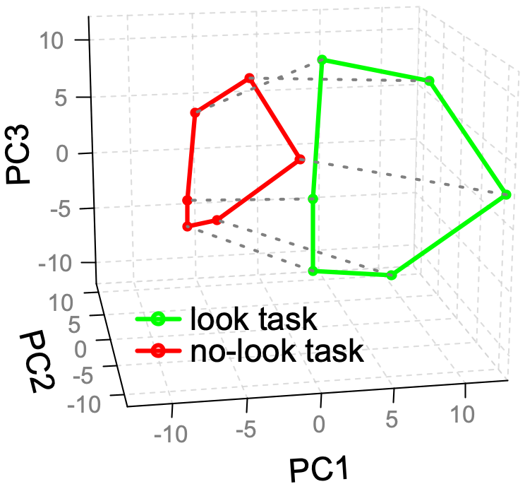
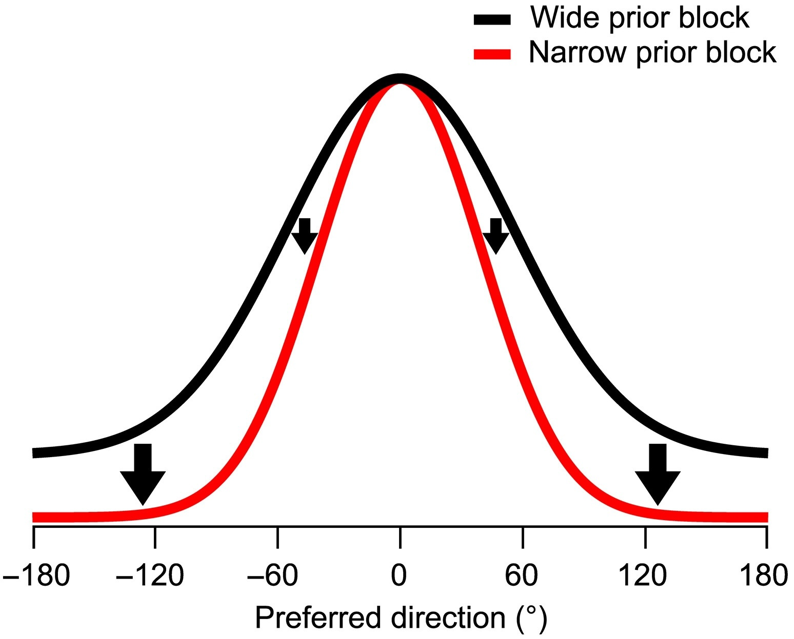
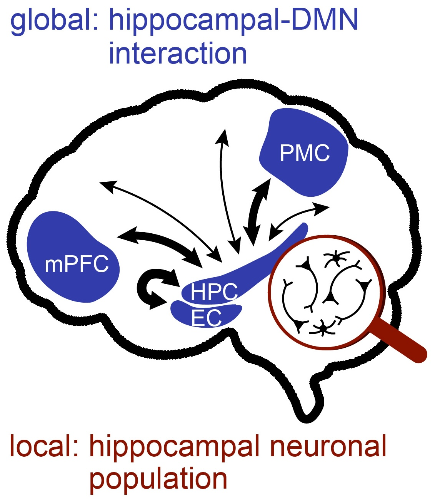
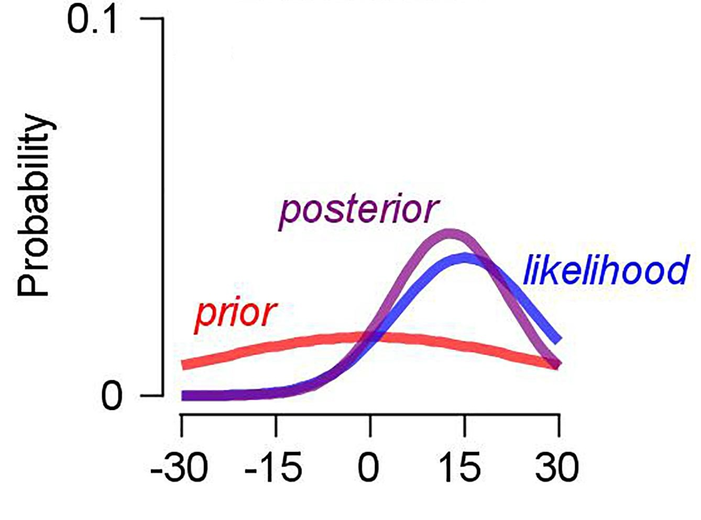

How does the brain process information across contexts?
We constantly navigate a flood of information, figuring out what matters in each moment and adapting our
behavior accordingly. This ability to flexibly adapt across contexts is central to intelligent behavior.
My research investigates how the brain encodes context and uses it to process information adaptively as
animals switch between multiple tasks. To acheive this, I use electrophysiological recordings and
computational approaches.
I am a PhD candidate in Neuroscience at
Washington University in St. Louis, working with
Lawrence Snyder.
I received ME in Biomedical Engineering at Sungkyunkwan University in Korea, advised by
Joonyeol Lee.
Selected Work

Is spatial memory coding consistent across tasks?
Prefrontal cortex represents spatial memory with a shared structure across tasks, while task context shifts
the memory manifolds.
"Compositional architecture: Orthogonal neural codes for task context and spatial memory in
prefrontal cortex."
bioRxiv (2025)
Code and data are available
here

How does expectation modulate visual perception?
Prior expectations sharpen neural population tuning for motion direction,
through different modulation of individual neurons based on their preferred direction.
"Prior expectation enhances sensorimotor behavior by modulating population tuning and subspace
activity in sensory cortex."
Science advances (2023)
Code and data are available
here

Do different spatial scales of the brain support different cognitive functions?
Although scales are biologically dependent and embedded to one another,
each scale may serve a causal role in different cognitive processes,
which enables diverse neural computations to occur simultaneously in the brain.
"Understanding cognitive processes across spatial scales of the brain."
Trends in cognitive sciences (2025)

Can Bayesian inference model predict eye movements?
Changes in bias and variability in smooth pursuit eye movements induced by prior knowledge
were quantitatively explained by a Bayesian observer model.
"Effect of prior direction expectation on the accuracy and precision of smooth pursuit eye
movements."
Frontiers in systems neuroscience (2019)
{kind=link}
{kind=link}
{kind=link}
{kind=link}